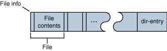
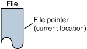

Random access files permit nonsequential, or random, access to a file's contents.Consider the archive format known as ZIP. A ZIP archive contains files and is typically compressed to save space. It also contain a directory entry at the end that indicates where the various files contained within the ZIP archive begin, as shown in the following figure.
Suppose that you want to extract a specific file from a ZIP archive. If you use a sequential access stream, you have to: 
A ZIP archive.
Using this procedure, on average, you'd have to read half the ZIP archive before finding the file that you want to extract. You can extract the same file from the ZIP archive more efficiently by using the seek feature of a random access file and following these steps:
- Open the ZIP archive.
- Search through the ZIP archive until you locate the file you want to extract.
- Extract the file.
- Close the ZIP archive.
This algorithm is more efficient because you read only the directory entry and the file that you want to extract.
- Open the ZIP archive.
- Seek to the directory entry and locate the entry for the file you want to extract from the ZIP archive.
- Seek (backward) within the ZIP archive to the position of the file to extract.
- Extract the file.
- Close the ZIP archive.
The
java.io.RandomAccessFileclass implements both theDataInputandDataOutputinterfaces and therefore can be used for both reading and writing.RandomAccessFileis similar toFileInputStreamandFileOutputStreamin that you specify a file on the native file system to open when you create it. When you create aRandomAccessFile, you must indicate whether you will be just reading the file or also writing to it. (You have to be able to read a file in order to write it.) The following code creates aRandomAccessFileto read the file namedfarrago.txt:And this one opens the same file for both reading and writing:new RandomAccessFile("xanadu.txt", "r");After the file has been opened, you can use the commonnew RandomAccessFile("xanadu.txt", "rw");readorwritemethods defined in theDataInputandDataOutputinterfaces to perform I/O on the file.
RandomAccessFilesupports the notion of a file pointer. The file pointer indicates the current location in the file. When the file is first created, the file pointer is set to 0, indicating the beginning of the file. Calls to thereadandwritemethods adjust the file pointer by the number of bytes read or written.In addition to the normal file I/O methods that implicitly move the file pointer when the operation occurs, 
A ZIP file has the notion of a current file pointer.
RandomAccessFilecontains three methods for explicitly manipulating the file pointer.
int skipBytes(int)— Moves the file pointer forward the specified number of bytesvoid seek(long)— Positions the file pointer just before the specified bytelong getFilePointer()— Returns the current byte location of the file pointer